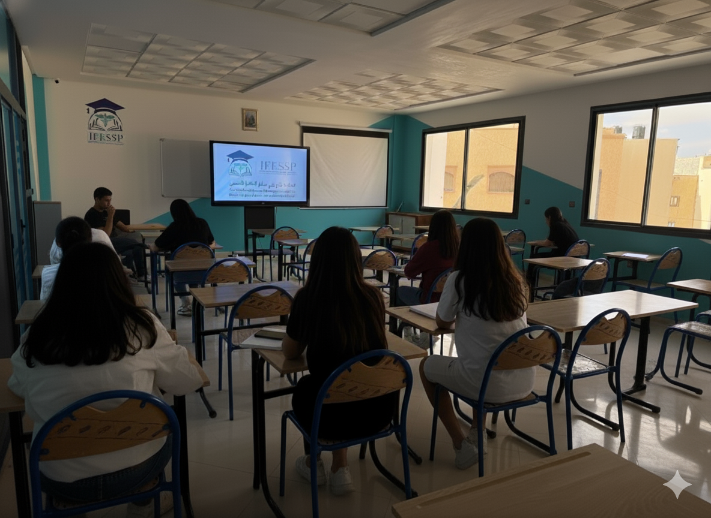

La formation d'Infirmier Polyvalent est une formation complète de 3 ans qui vous prépare à exercer le métier d'infirmier avec excellence. Cette formation combine théorie académique rigoureuse et pratique clinique intensive pour former des professionnels de santé compétents et dévoués.

Étude approfondie du corps humain
Infections et prévention
Techniques infirmières fondamentales
Administration des médicaments
Pathologies et traitements
Soins péri-opératoires
Soins aux enfants
Santé mentale
Réanimation et urgences
Leadership et coordination
Pratique professionnelle
Mémoire professionnel
Services de soins généraux et spécialisés
Établissements de soins privés
Services d'aide et de soins
Assistance médicale
Rejoignez notre programme d'Infirmier Polyvalent et construisez une carrière solide dans le secteur de la santé
Postuler Maintenant